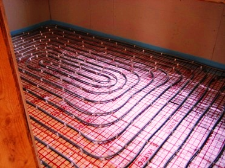

Качественный электромонтаж в Санкт-Петербурге и ленобласти, стаж 12 лет. Частный электрик, недорого и качественно.
Телефон - 8 904 642 08 57 Николай.

Устройство электрического тёплого пола.
Статья содержит полезную информацию об утеплении бетонного пола. Даны как общая информация, так и конкретные рекомендации.
Вопросы по благоустройству собственного жилища либо рабочего помещения всегда занимали важное место. В настоящее время большинство зданий возводятся из бетонных плит или блоков, которые, к сожалению, плохо удерживают тепло, что не очень хорошо сказывается на температуре всего помещения. Но к счастью, произвести утепление бетонных поверхностей, в том числе и полов, не является трудновыполнимой задачей.
«Теплая» заливка.
Одним из эффективных способов утеплить основание помещения является использование жидких полов с определёнными техническими параметрами, среди которых стоит выделить низкую теплопроводность.
Подобные материалы имеют в своём составе специальные виды цементных растворов, смешанные с дополнительными элементами, помогающие удерживать тепло в помещении. Перед заливкой пола обязательно настилают гидроизоляционный материал, дабы избежать сырости, которая часто становится причиной понижения температуры. Данный способ один из самых дешевых, но мощного эффекта он не даёт, поэтому подходит не для всех помещений.
Утеплители.
Хорошим средством произвести утепление бетонного пола является использование так называемых наполнителей. Примерами подобных строительных материалов могут служить: вермикулит, керамзит, различные пены, перлит и т. д. (на самом деле, список большой).
Все они – утеплители и при их использовании обязательным является возведение лагов на полу (это, к примеру, деревянные, пластиковые или металлические брусья). Лаги обычно бывают несколько сантиметров в высоту. Они укладываются решетом по площади всей поверхности. Образовавшиеся при этом пустоты заполняются различными наполнителями. Гидроизоляционный материал настилается до и после лагов.
Подогрев.
 Подогрев поверхности, как способ утепления бетонного пола, является наиболее эффективным, и в то же время дорогостоящим. Сегодня рынок располагает многими видами оборудования, которые осуществляют обогрев. В основном все они работают при помощи электричества или горячей воды.
Подогрев поверхности, как способ утепления бетонного пола, является наиболее эффективным, и в то же время дорогостоящим. Сегодня рынок располагает многими видами оборудования, которые осуществляют обогрев. В основном все они работают при помощи электричества или горячей воды.
При помощи электрического оборудования наиболее эффективно полы обогреваются по следующей схеме:
• Вначале поверхность стягивается жидким полом, который имеет в своём составе материалы с низкой теплопроводностью (гидроизоляция прокладывается под стяжку и при надобности после неё);
• Затем кладётся теплоизоляционный материал;
• Поверх всего ложится электрический обогреватель (обычно, система кабелей) в решето, который впоследствии ещё раз заливается жидким полом.
В случае с подобным утеплением бетонного пола имеются некоторые примечания:
• Не рекомендуется на полы с подобным утеплителем устанавливать мебель на низкой посадке, настилать паласы и т. д. в целях предотвращения перегрева системы;
• Для управления температурой существует масса приборов, что делает удобным использование такого вида обогрева;
• Также обогреваемую поверхность можно поделить на зоны, и при помощи специальных устройств обогревать только нужные участки в нужное время в целях экономии электроэнергии.
• Существуют также готовые панели, в которых встроено обогревательное оборудование – они не нуждаются в заливке;
Схема обогрева полов горячей водой примерно одинакова. Подобное оборудование может быть представлено в виде отдельных труб или также готовых панелей, прочно соединённых между собой сваркой в целях предотвращения протечек. Такую систему можно подключить к центральному отоплению всего здания, либо к другому отдельно стоящему источнику горячей воды (например, к отопительному котлу).
Финишное покрытие.
Выбор окончательного покрытия с хорошими показателями теплоизоляции также эффективный способ утепления бетонных полов. Сегодня их существует немалое количество – линолеум, паркет и паркетная доска, ламинат, ковролин и многие другие. Но зачастую, если не проложена качественная теплоизоляция под ними, то они не справляются со своей задачей.
Теплоизоляция может быть достигнута одним из перечисленных выше способов. Выбор того или иного финишного покрытия напрямую зависит от того, как защищён слой под ним. В случае с электрическим или водяным обогревом (если он сам по себе не является финишным покрытием) достаточно будет и линолеума, при использовании лагов с наполнителем – ламината вполне хватит, а при простой «теплой» заливке этого может всего может быть недостаточно. Однако паркетная доска в этом случае может решить проблему, так как дерево само по себе хороший теплоизолятор.
Словом, утепление бетонных полов дело не совсем сложное и оно может быть достигнуто различными способами и методами, выбор одного из них зависит от предпочтения и финансового положения. Ведь сегодня уже разработано и продолжают разрабатываться много различных строительных материалов, которые помогают решить практически любую проблему в вопросе с утеплением помещения.
Можно сказать, что выбор подходящего материала должен осуществляться с учетом условий помещения (температура, влажность и т. д.) и эксплуатации самих полов (к примеру, в случае с промышленными объектами это может быть сильная весовая нагрузка, физические и химические воздействия). Поэтому, если имеются затруднения в данной области, иногда проще и лучше всего обратиться к специалистам за консультацией, прежде чем выбирать материалы и приступать к утеплению.

Сколько будут стоить материалы.
Замена электропроводки в панельном доме.
Расценки на электропроводку квартир.
Сколько стоит замена электропроводки в двухкомнатной квартире?.
Сколько стоит проложить проводку в 3 ком квартире?
Сколько стоит проложить проводку в четырехкомнатной квартире?
Сколько стоит сделать внутреннюю проводку?.
Установка люстр и светильников.
Замена электропроводки в панельном доме.
Электромонтаж проводов в бане.